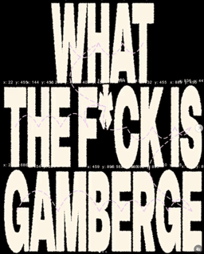
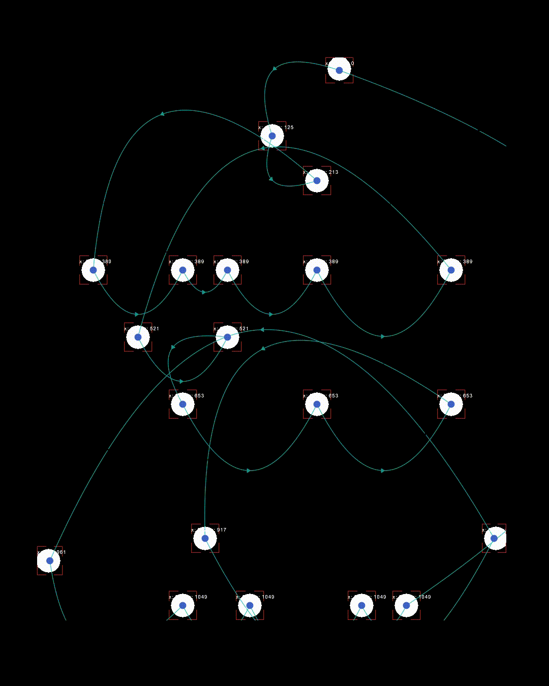

My attempt "WTF is AfterEffects"
AIMS
I chose to reverse engineer GAMBERGE, a typographic motion experiment by Geoffrey Bautista "on how type and basic shapes interact through movement, testing different ways they can connect, merge and transform in motion."
PRECEDENTS & CONTEXT
I was drawn to this design work because I love how the type is broken down into dots in a gritty, algorithmic process. I've played with type in a similar way, where letters are blown up and distorted into illegibility with heavy stroke but not through AfterEffects or motion (I historically hate motion hahah but rly wanna get better at it!!)
PROCESS & METHODS
Following this tutorial by Geoffrey Bautista.
- New project in AfterEffects, to a new text layer
- Playing around with effects CC Ball Action & Threshold, experimenting with grid spacing and ball size key frames
- Then applied Tracery (AE plugin), where I deviated from the tutorial a little with my own settings
REFLECTION ON ACTION
- Following a tutorial was incredibly useful and insightful because in recreating this typographic experiment, I have a greater understanding of AE & tools like plugins or CC Ball Action effects
- Often starting from scratch in an attempt to recreate an inspiring design is super intimidating/I feel lost & don't know where to start
- Only encouraging me to further delve into this area of experimentation... so much cool stuff I have yet to explore!
REFLECTION FOR ACTION
- My text animation still feels a bit messy & not as refined or intentional as I would like
- Get more comfortable playing around with these AE plugins & tools which I think have incredible potential